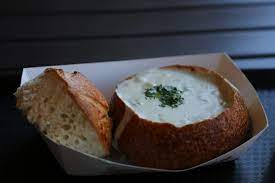

The Recipe for Clam Chowder

It's SOUP SEASON, so come along and let's get our soup on.
Don't fret, although clam chowder may look difficult to make, this recipe page makes it less daunting to make with simple and easy steps
So, let's start cooking!
Ingredients for Clam Chowder
Let's start off with the ingredients leeded for clam chowder:
- 4 slices bacon, diced
- 2 tbps of unsalted butter
- 2 cloves of garlic, minced
- 1 onion, diced
- 1/2 teaspoon of dried thyme
- 3 tbps of all-purpose flour
- 1 cup of milk
- 1 cup of vegetable stock
- 2 cans of chopped clams (6.5 oz), juices reserved
- 1 bay leaf
- 2 russet potatoes, peeled and diced
- 1 cup - Half and Half of whole milk and cream
- Kosher salt and freshly ground black pepper, to taste
- 2 tbps of chopped fresh parsley leaves
The Directions
Now that you've got the ingredients, time to make the dish itself.
- Heat a large stockpot or Dutch oven over medium high heat.
Add bacon and cook until brown and crispy, about 6-8 minutes. Transfer to a paper towel-lined plate, reserving 1 tablespoon excess fat; set aside.
- Melt butter in the stockpot. Add garlic and onion, and cook, stirring frequently, until onions have become translucent, about 2-3 minutes. Stir in thyme until fragrant, about 1 minute.
- Whisk in flour until lightly browned, about 1 minute. Gradually whisk in milk, vegetable stock, clam juice and bay leaf, and cook, whisking constantly, until slightly thickened, about 1-2 minutes. Stir in potatoes.
- Bring to a boil; reduce heat and simmer until potatoes are tender, about 12-15 minutes
- Stir in half and half and clams until heated through, about 1-2 minutes; season with salt and pepper, to taste. If the soup is too thick, add more half and half as needed until desired consistency is reached.
- Serve immediately, garnished with bacon and parsley, if desired.
Conclusion
Enjoy your hearty clam chowder! If you'd like to access two other recipes please visit Fun Recipes.